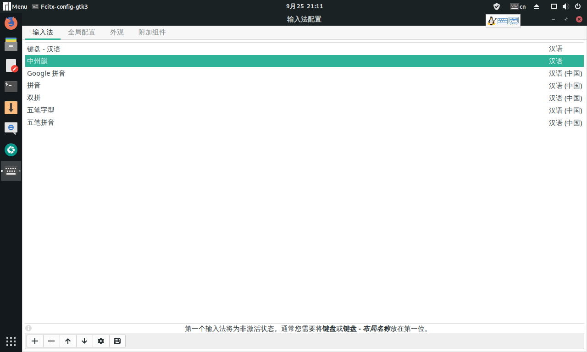
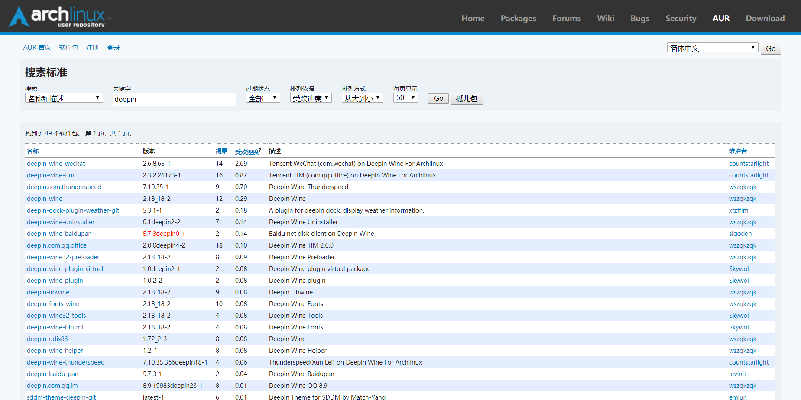

manjaro-gnome-18.1版本的安装
manjaro-gnome-18.1版本的安装
人生苦短,我用Manjaro
Manjaro 显著的特点:
- “滚动发行”开发模式，可提供最新的系统，而无需安装新版本
- 可用 AUR
我也是看中了这个特点所以才选它的,尤其aur仓库里可以用上微信、QQ
安装和配置
下载地址
https://www.manjaro.cn/category/download-manjaro
主要有3个版本: XFCE 、KDE、GNOME 桌面环境, 我选的是GNOME,可根据自己的喜好选择
- 安装
前面的安装还是很简单的,图形安装,根据提示安装就可以了
- 配置
选择国内镜像源
sudo pacman-mirrors -c China -m rank # 选择源，在跳出的对话框里选择想要的源# 我选择的是科大的镜像源 # 这个字样的地址,打上勾确定就行 https://mirrors.ustc.edu.cn/manjaro/增加中文社区的源来加速安装软件，在 /etc/pacman.conf 中添加 archlinuxcn 源，末尾加上
[archlinuxcn] SigLevel = Optional TrustedOnly Server = https://mirrors.ustc.edu.cn/archlinuxcn/$arch安装 archlinuxcn-keyring 包以导入 GPG key
sudo pacman -S archlinuxcn-keyring同步并更新系统
sudo pacman -Syyu输入法 (google拼音、中洲韵)
sudo pacman -S fcitx-googlepinyin sudo pacman -S fcitx-rime #中州韵 sudo pacman -S fcitx-im #这里选择全部安装 sudo pacman -S fcitx-configtool修改配置文件 ~/.profile 在末尾添加上
export GTK_IM_MODULE=fcitx export QT_IM_MODULE=fcitx export XMODIFIERS="@im=fcitx"附图  输入法需要重启才可以用
安装 yay, AUR 包管理工具
sudo pacman -S yay配置 yay 的 aur 源为清华源 AUR 镜像
yay --aururl "https://aur.tuna.tsinghua.edu.cn" --save修改的配置文件位于 ~/.config/yay/config.json ，可通过查看修改过的配置
yay -P -g打开AUR仓库 看下图,从点击安装删除软件 → 选择首选项 点选启用AUR支持
这里就可以安装很多国内的软件,比如微信、QQ,看下方截图 
附上常用命令
| 命令 | 说明 |
|---|---|
| 升级系统 | |
| pacman -Su | 升级系统中所有已安装的包 |
| pacman -Syu | 升级系统和同步仓库数据 |
| pacman -Syy | 强制更新 |
| 安装软件 | |
| pacman -S | 后面加上软件名 |
| pacman -Sy | 同步包数据库后再执行安装 |
| pacman -Sv | 显示一些操作信息后执行安装 |
| pacman -U | 安装本地包,扩展名为 pkg.tar.gz |
| pacman -U url | 安装一个远程包（不在 pacman 配置的源里面） |
| 删除软件 | |
| pacman -R | 只删除包，保留其全部已经安装的依赖关系 |
| pacman -Rs | 删除包的同时，删除其所有没有被其他已安装软件使用的依赖关系 |
| pacman -Rn | 删除软件时同时删除相应的配置文件 |
| pacman -Rsn | 删除当前无用的依赖和配置文件 |
| pacman -Sw | 只下载包，不安装 |
| pacman -Sc | 清理未安装的包,位于 /var/cache/pacman/pkg/ |
| pacman -Scc | 清理所有的缓存文件 |
| 搜索包 | |
| pacman -Ss keyword | 在仓库中搜索含关键字的包 |
| pacman -Qs keyword | 搜索已安装的包 |
| pacman -Qi package | 查询本地安装包的详细信息 |
| pacman -Ql package | 已安装软件包所包含文件列表 |
| pacman -Fs keyword | 按文件名查找软件库 |
| pacman -Qo /path/to/a/file | 查询数据库获知目前你的文件系统中某个文件是属于哪个软件包 |
| pacman -Qdt | 罗列所有不再作为依赖的软件包(孤立orphans) |
| pactree package | 显示软件包的依赖树 |
| whoneeds package | 检查一个安装的软件包被哪些包依赖 |
| pactree -r package | 检查一个安装的软件包被哪些包依赖 |